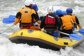

Baby Cottage
Coorg Culture
Coorg or Kodagu History
The early accounts of Coorg are purely legendary, and it was not till the 9th and 10th centuries that its history became the subject of authentic record. At this period, according to inscriptions, the country was ruled by the Gangas, under whom the Changalvas, kings of Changa-nad, styled later kings of Nanjarayapatna or Nanjarajapatna, held the east and part of the north of Coorg, together with the Hunsur talk in Mysore. After the overthrow in the 11th century, of the Ganga power by the Cholas, the Changalvas became tributary to the latter. When the Cholas in their turn were driven from the Mysore country by the Hoysalas, in the 12th century, the Changalvas held out for independence; but after a severe struggle they were subdued and became vassals of the Hoysala kings. In the 14th century, after the fall of the Hoysala rule, they passed under the supremacy of the Vijayanagar empire. In 1832, evidence of treasonable designs on the rajas part led to inquiries on the spot by the British resident at Mysore, as the result of which, and of the rajas refusal to amend his ways, a British force marched into Coorg in 1834, On the 11th of April the raja was deposed by Colonel Fraser, the political agent with the force, and on the 7th of May the state was formally annexed to the East India Companys territory. In 1852 the raja, who had been deported to Vellore, obtained leave to visit England with his favorite daughter Gauramma, to whom he wished to give a European education. On the 3oth of June she was baptized, Queen Victoria being one of her sponsors; she afterwards married a British officer who, after her death in 1864, mysteriously disappeared together with their child. Vira Raja himself died in 1863, and was buried in Kensal Green cemetery. The so-called Coorg rebellion of 1837 was really a rising of the Gaudas, due to the grievance felt in having to pay taxes in money instead of in kind. A man named Virappa, who pretended to have escaped from the massacre of 1820, tried to take advantage of this to assert his claim to be raja, but the Coorgs remained loyal to the British and the attempt failed. In 1861, after the Mutiny, the loyalty of the Coorgs was rewarded by their being exempted from the Disarmament Act.
Coorg or Kodagu People
The Coorgs or the people of Coorg are known for their great hospitality and sense of humour. Their friendly nature makes visitors travel to Coorg over and over again.
The Kodavas
Kodavas are the main community of Coorg or Kodagu. The word 'Kodagu' is said to be derived from this community. The kodavas are a distinctive race of India known for their bravery since ages, are the only race in India that has been permitted to acquire guns without a licence. Women folk, both beautiful and highly educated, occupy a predominant place in the family while the men folk, tall and handsome, look after the coffee estates
The Kodava Mophlas or Kodava MappilasThe Mapillas (historically called Mophlahs) are the other major community of Coorg. They are the earliest known Indian Muslim community, basically Arab merchants who settled in the Malabar coast in the 8th century, with the permission of the Chera dynasty. Subsequently, Mappilas adopted the local Dravidian language that later developed into Arabi-Malayalam
The Kodagu GowdasArebhashe gowdas or Kodagu Gowdas or Coorg Gowdas and Tulu Gowdas are another major ethnic group in the Coorg . They are found maily in Virajpet and Somwarpet taluks. The Valaga-Dance is quite famous and frolic for Gowdas during ceremonies. "Arebhashe", is the main lingo of Kodagu Gowdas, which is the dialect of Kannada. It is written in the Kannada script.
The BearysOccupying mostly the main town, Mercara, they are another major community of Coorg. Byaris, both humours and fun loving, differ from the other Muslim community in their life style. They are funloving and friendly.Bearys follow Islam religion and celebrate all Islamic festivals.
Coorg or Kodagu Festivals & Events
Madikeri or Mercara DasaraMercara Dasara, second only to the Mysore Dasara, is celebrated in a unique way with decorated tabloos (Dasha Mantapas or The Ten Tabloos). Traditonal dancers, singers, fun games, archestra, cultural programs are held round the clock. Mainly celebrated at night Mercara Dasara is the right time to rejoice. Music of all kind blend through hill station inducing everyone to dance it out.
Cauvery SankramanaCelebrated on an auspicious day of Tula Sankramana in the month of October, this festival marks the emerging (taking birth / Theerthodbhava) of Goddess Cauvery (The River) at a place called Tala Cauvery in Bhagamandala. Devoties throng to the holy place from various parts of India.
Kunde Habba - A unique tribal festivalThe annual "Kunde Habba", which in local language means "Festival of abusing god", is a traditional festival of the tribal people in Kodagu District. It is celebrated with fervour at Devarapura area near Thithiamthi Village in Virajpet taluk of Coorg.
Coorg or Kodagu Traditions & Rituals
Kakkada Padinett
Many rituals associated with the ancestral traditions are steadfastly observed in Kodagu. Such annual rituals are observed according to the set time and if one misses out on that, the wait would go on for one more year."Kakkada Padinett", 18th day of "Kakkada" month in Kodava calendar in Kodagu, is one of the significant days (2009, August 3, Monday). People throng the places where "Aati soppu" or "Madd toppu" or "kurunji toppu", as it is called in Kodava language, "Aati choppu" in Beary language, is sold. They buy the leaves that come along with slender stems.
On the 18th day of "Kakkada" month, the leaves are said to contain 18 varieties of herbal medicine. Leaves grown in the wild are plucked and soaked (some boil) in water to get the aromatic juice, which has a thick and unique flavour in dark violet colour. Women make cakes out of the juice and also sweet porridge. The belief is that the plants contain 18 types of medicine. On the 18th day of "Kakkada", the plants start emitting a sweet aroma that is not found on them earlier. The aroma starts waning after the 18th day.
"Kakkada koli" (chicken) is also a special delicacy in the district on this day. Monsoon is associated with several such rare occurrences in Kodagu. It is the time when mushrooms emerge from the ground. "Baimbale" (bamboo shoot) or "kanile" is the other delicacy that is enjoyed by the people of Kodagu. It is believed that "mushrooms" and "Baimbale" help balance the body temperatures during the monsoon season.
Coorg or Kodagu Cuisine
Coorg cuisine is considered one of the most delicious among all the south Indian dishes. Vast varieties of food are prepared by a typical Coorg family. In a kodava family pork is considered the main dish and it is served on special occasions such as festivals or any other grand events in th family. A variety of sea foods are prepared by Beary people who also are good at cooking the famous Gee rice and biryani
Coorg or Kodagu Literature
Coorg's literature is essentially literature in English and Kannada languages that is either written by Coorgs or people dealing with Coorg themes or places. Folklore and nature are the concept of novels and short stories. Novelists Kaveri Nambisan and Saritha Mandappa are prominent in Coorg.
Coorg or Kodagu Products
Coorg is famous for Coffee, Cardamom, Pepper, Orange, Honey, Vanilla and Anthorium. You can get the best of all here with less effort. There are retail shops set across Coorg where you can buy the best quality Coorg products. If you are interested in knowing more about the cultivation process we suggest you book a 'Plantation-stay' in Coorg during your visit. A plantation stay will be more ideal for visitors who intend to seek more knowledge about plantation of Coorg products. You can get first hand information direct from the plantation oweners who will be your hosts during your stay.
Coorg or Kodagu Sports
People of Coorg are generally athletic built, tall and strong. As such they are good sports persons. There are lots of sports clubs and teams in Coorg. Hockey is the most popular sports in Coorg. Soccer/football is considered most favourite sport of all time. Cricket is played by most youngsters these days and the number of teams are exceeding day by day. Records are created in the field of athletics, hockey, soccer, cricket, table tennis and also in badminton.
Field HockeyHockey is like a traditional game for all Kodavas. Few Kodavas play for Indian team as well as Air India, Indian Airways and various other clubs. Kodava Family hockey tournments are held very often in Virajpet wherein almost all the Kodava family participate. Teams are formed within the family and sometimes even women folk are included in the team. it is very refreshing to see and promotes oneness among the people of Coorg.
CricketCricket is the game of younger generation and it is keeping a good phase in Coorg. Every month cricket matches are held in various parts of Coorg. Huge cash price and trophys are given out to the winners.
Foot Ball / SoccerYearly matches are held by various clubs in Coorg. Most Famous ones are held in Sunticoppa and Mercara. Mercare has the biggest soccer and hockey ground in Coorg.
GolfTwo best golf coarses are located in Mercara and Polibetta. Madikeri has a 9-hole golf course residing amidst calm serene and a splendid surrounding. Polibetta also has 9-hole golf course.
Coorg or Kodagu Adventure Sports
Dirt Track Rally - Mahindra Great EscapeExhilarating, yet daring drive through the treacherous terrain of the district for rally drivers participating in the Mahindra Great Escape Rally.The event not only tested driver's efficacy at manoeuvring through slippery roads, negotiating heights and passing through rivulets, but also the endurance of their vehicles. Participants from Goa, Mumbai and Karnataka drive through the designated route before regrouping at the resort. A few locals also participate in this extreme adventure sport.
The route generally covers the interior of Coorg such as Makkandur, Kandanakolli, Hattihole, Madapur, Hammiyala, Garwale, Surlabbi, Mutlu, Devastur, Kalur and Hebbettageri. During the rally season, moderate to heavy downpours greets the participants all along the dirt track. People come out of their homes to watch as the participants drove through their villages. Mahindra & Mahindra, JK Tyres, Bosch, Shell, Bharat Petroleum are some of the main sponsor to the event.

Usefull Links
Places
Google Map view
View Larger Map
Contact Details
Prana Belliappa Mob: 9845302753 Land:08274-247908